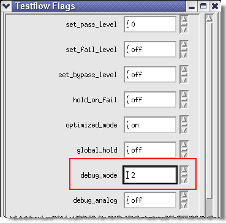
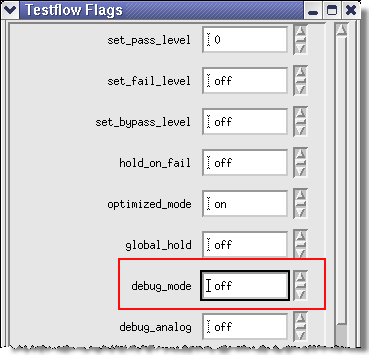

Configurable output for HX pins
With HX setup some parameters for pin lists can be set as HX pins. Using the debug_mode test flow flag (see Testflow flags), the output of the solution tools SourceSync, DataTraining, EyeFinder and ParallelShmoo in the report window of SmarTest can be reduced.
Debug Mode ON (1, 2 or 3)

HX and HSM pins are displayed.
Example output:
SourceSync
Source sync group: DQ0_o, DQN_o [DQ0_o_A, DQ0_o_B, DQ0_o_C, DQ0_o_D]
DataTraining
Output/Result: DQ0_o [DQ0_o_A, DQ0_o_B, DQ0_o_C, DQ0_o_D] Input/Setup: DQ0_o,[DQ0_o_A, DQ0_o_B, DQ0_o_C, DQ0_o_D, TX2_clk]
EyeFinder
Output Pin DQ0_o [DQ0_o_A, DQ0_o_B, DQ0_o_C, DQ0_o_D, TX2_clk] is failing Input Pin DQ0_o_dev,[DQ0_o_A_dev, DQ0_o_B_dev, DQ0_o_C_dev, DQ0_o_D, RX2_clk] is failing
ParallelShmoo
Result Pins: DQ0_o [DQ0_o_A, DQ0_o_B, DQ0_o_C, DQ0_o_D]
Debug Mode off

Only HX pins are displayed.
Example output:
SourceSync
Source sync group: DQ0_o, DQN_o
DataTraining
Output/Result: DQ0_o Input/Setup: DQ0_o
EyeFinder
Output Pin DQ0_o is failing Input Pin DQ0_o_dev is failing
ParallelShmoo
Result Pins: DQ0_o